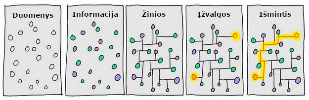
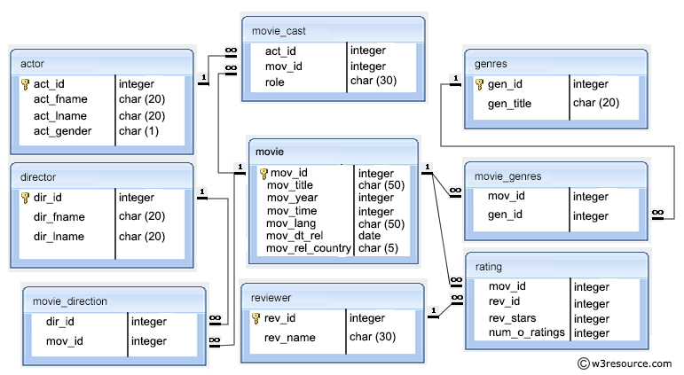

Duomenų šaltiniai ir jų panaudojimas
lekt. Šarūnas Kasnauskas, 2018Nuo duomenų iki išminties
Duomenų tipai
Struktūruoti duomenys (Structured data) - griežta schema
Reliacinės duomenų bazės, ERP, CRM,..Pusiau struktūruoti duomenys (Semi-structured data) - schema vėliau
CSV, XML, JSON, HTTP, HTML,..Nestruktūruoti duomenys (Unstructured data) - jokios schemos
Tekstas, vaizdas, garsas,..Struktūruoti duomenys
Reliacinės duomenų bazės
Lentelių sujungimas
Vidiniai sujungimai (INNER JOIN): derinami tik susiję abiejų lentelių duomenys
Išoriniai sujungimai (OUTER JOIN): tinkamai derinami visi susiję duomenys ir visi likę vienos lentelės duomenys
Visas išorinis sujungimas (FULL JOIN): visi duomenys, derinami, kai tai įmanoma
Kryžminiai sujungimai (CROSS JOIN): visi duomenys, derinami bet kokiu galimu būdu